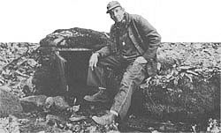
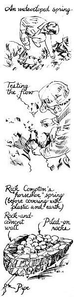
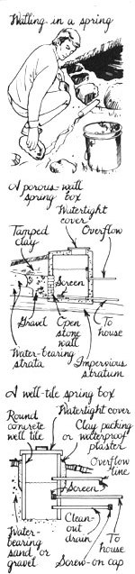
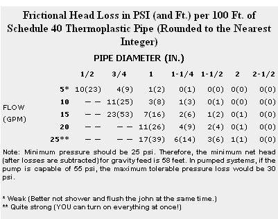

The Rural Art Of Capping A Spring
Homestead Handbook for utilizing and relying on an undeveloped spring, including step-by-step illustrations, spring quality, capping time, other approaches and tips, reservoirs, pumps.
May/June 1985
by Pat Stone
Cold, fresh water bubbling up out of the ground - for drinking, watering the garden, bathing, or supplying to livestock - this has to be one of the most romantic, beautiful, and archetypal images of rural life. Lucky is the country dweller who finds a vein of this "homesteader's gold" on the property! And especially fortunate is the man or woman whose newfound spring lies well above the house. Once capped and piped, that water will freely deliver itself to all the spigots in the home!
If you are fortunate enough to have a usable spring on your property, you'll want to thank your Creator for your blessings and smile broadly at your prospects. Don't be surprised, though, if your sense of appreciation (or smugness) begins to diminish when, eventually, you get round to thinking about just how to develop that spring. How, for instance, can you encase it to protect it from contaminants, yet not simultaneously lose it by obstructing its flow? Is it high enough above your house so you won't need a pump, strong enough so you won't need a reservoir? Will it dry up in the summer - or freeze up in the winter?
Capping a spring - the phrase sounds so simple, so easy. And most times, the task itself doesn't have to be too complicated . . . if you know what you're doing. That's where we at MOTHER come in. We've developed a few springs ourselves, talked to experienced local old- and new-timers, and digested everything we could read on the topic.
We'll share it all with you here. By the end of this article, you'll know as much about capping a spring as we do. Enough to do the job correctly - the first time.
[EDITOR'S NOTE: This article assumes the health department in your area allows using springs for drinking water. Check your local regulations before setting to work.]
How Good Is It?
If you've got a tiny rivulet running across your land, you've no doubt already traced it back to the spot you want - the point where the trickle first emerges from the ground. You may have a less obvious spring, though. Search your property. Is there an area where water-loving plants - ferns, reeds, or jewelweeds - grow particularly lushly? Is there a "sobby spot" on your property . . . one of those boot-sucking mudholes you normally try to avoid? Places like these may contain usable springs. There's only one way to tell: Start digging. Most times, you should be able to pull rocks and move dirt until you can discover a flowing source for that wetness (at other times, you'll likely be forced to give up in frustration). If the land's mushy, you might want to dig a ditch running out of that soft spot to drain the area - before you start searching.
Once you've located your spring, the next three questions are, Is it year-round? Will it produce enough water? Is the water safe to drink?
Obviously, the only way to tell if your spring will really produce water year-round is to watch it for a year-most importantly during your area's annual dry spell. All the other guidelines we can give you are iffy ones: Has the water worn out a channel, a good flow bed, below the spring's source . . . or does it just look like somebody left a running garden hose on the ground for a month or two? Is the nearby plant growth distinctively lush, and can you find old roots that have - over an extended period of time - grown toward the water source? Are there any local residents who can vouch for that spring's reliability?
Wet-weather springs equal dry spell frustration, so make certain you'll have year-round water before you go any further. Assuming you have a steady spring, you'll also want to know if it can provide all the water you'll need. Dam it up temporarily with a wall of mud that has a pipe section laid at the bottom, then catch the outflow from that pipe in a bucket, and time how long it takes you to draw a gallon. Since your spring may yield several times as much water in wet weather as it does in arid times, better make this measurement during a dry spell.
And exactly how much is enough? Well, some ballpark estimates are 75 gallons of water per day per person in your household . . . 35 gallons daily for the milk cow (6 to 12 for a dry cow, bull, or horse). . . 2 to 4 per pig . . . 2 per sheep . . . and 3 to 7 per 100 chickens. One of your biggest water users will be the garden (or lawn): To fully water a 1,000-square-foot vegetable plot (a chore that'll have to be done weekly when the rain doesn't cooperate) demands a whopping 600 gallons!
Offhand, such numbers may sound pretty intimidating. But heck, if that little spring of yours dribbles out a mere gallon of water a minute, it'll give you 1,440 gallons a day!
If you want to try to increase your spring's output, the most common tactic is to keep digging back at your spring's "spout hole" and hope you'll hit some other veins you can tap. Everyone we talked with, though, admits that's an iffy proposition. You may luck out and increase your flow - but you could also disturb the spring so much that it would change course and you'd lose it. So don't press your luck. As soon as you get a water flow you can live with, quit digging.
Assuming you're pleased with your spring's output, you'll need to determine one more thing before getting to work: its quality. Sad to say, springwater is more likely to be contaminated than deep well water. (Indeed, the reason you want to cap your spring at the point where it emerges from the ground is to make sure you're collecting only subsurface groundwater; surface water is the most likely of any to be tainted.) Contact your local health department to get a water sample jar and instructions on how to use it so you can get your water tested. The report that results will tell you if you have an excess of living pathogens in your water - things like fecal coliforms and streptococcus. You may well be able to disinfect a mildly contaminated spring with an occasional bleach treatment. The health department folks can tell you how to do this. However, if you have any reason to suspect any chemical contamination, you'll have to get a full water test. (Has any of the land in your spring's watershed been farmed - now or in the past? That could mean mercury, lead, nitrate, or other pollution. Is there an old dump above it?) The best - and most inexpensive - source we know of for one of these tests is WaterTest Corporation, Box 186, New London, NH 03257. (Call 800/H20-TEST for information.)
Capping Time
OK, you've located a year-round spring that passes your quantity and quality tests. It's time to cap that water source. Essentially, you'll want to completely encase the spring so that no surface water, small animals, or debris can get in there to contaminate or clog it.
Now no two springs are exactly alike. So there's probably going to be a certain amount of seat-of-the-pants finagling called for at your site that our article can't describe. To make our treatment simpler, though, we'll divide this discussion into bank springs, ones that flow out of a hillside, and seep springs, those that emerge from open ground. You can encase the former by closing in the three exposed sides and adding a lid, while the latter requires a complete, four-sided (and lidded) box.
We'll start with bank springs. Rick Compton, friend and former Eco-Village staffer, encased most of the springs out at our Ecological Research Center (all of which are of the banked variety). According to Rick, "What you want to do is channel that water into a pipe as easy as you can. You don't want to put any restrictions on its flow. Otherwise, it may eventually find another, easier route and change course on you." Indeed, Rick's so respectful of a spring's course-changing fickleness that often he'll temporarily cap a spring by laying the pipe in place with mud and rocks (or a little concrete), wait a week or two, then go back and see if it's still there before getting on with the job.
How then does Mr. Compton actually trap his springs? It varies. On one Eco-Village spring, Rick dug a horseshoe of soil out of the bank, set his water pipe down at the bottom of this shoe, built a curved rock-and-concrete wall about 1-1/2 feet tall running back into the bank, and filled the space he'd walled in with rocks . . . leaving as many crevices and gaps between the stones as possible. He covered this stone pile with six sheets of black polyethylene and then piled dirt around and on top of that. All you see now at that particular site is a pipe coming out of the side of the hill - offering a constant flow of fresh springwater, of course.
More often, Ricky will dig out the spring until he hits a solid rock base, then use a cold chisel and mallet to knock a small trough in that rock to accommodate his water pipe. (The conduit will be big enough - say 1-1/2 or 2 inches in diameter - to handle the spring's maximum output.) He'll then build a stone-and-cement wall about a foot below the pipe's entrance end. This wall will extend back on both sides to tie into the bank and will be capped with a rock or wooden lid. The wall's purpose? To enclose, but not dam, the spring. (Construction tips: Rick may surround the pipe with mud at a point above his cement wall, while he's building the wall, to help keep running water off the cement. To get a tight, leakproof seal, he makes sure as he works that the rocks touch only mortar, not each other. And he uses a fairly dry, stoneless mix of three parts mortar to one part sand.)
Sometimes, of course, Rick doesn't have a solid rock base to build on. In that case, he'll again start his wall about a foot downstream of the spring-dig about a foot down at this spot, and build his rock-and-cement wall up from there. He'll then lay his line in where the water level originally was. That way, he's stopped most of the seepage that would have occurred under his wall, yet because the pool thus formed is still below the spring's natural water level, the piped water is still following the path of least resistance.
"All you're trying to do is to get that water to go into the pipe," Rick sums up. "As long as you don't give it any reason not to go into the pipe, you should be OK."
Another friend of ours, 78-years-young Jim Searcy, is a good-natured, still-working-everyday jack-of-all-trades (and the fellow in this article's photograph) who says he's capped 25 to 30 springs in his time. Like Rick, Jim says you want to do all you can to make sure "that water don't cut from you." When he's working in soft rock, he'll sometimes use the same chisel-atrough-for-your-pipe technique Rick prefers, but Jim's more likely to make a boxed pool at his spring sites. To do so, he'll place a big drainpipe at the bottom of the front wall and lay up a three-sided concrete block structure, filling the blocks with cement and coating their inside surfaces with a water-sealing mixture of half mortar mix and half portland cement. Then he'll lay his waterline 2 to 4 inches off the bottom of his pool, like as not build a small wooden access door in front, and lid the block structure with rocks and such to encase the pool and keep it cool. Once Jim's done, he'll screw a cap on the lower drainpipe (he can unscrew it anytime he wants to drain the pool for cleaning) and will put a fine screen on the inside end of his waterline pipe in the pool to keep "spring lizards and crawfish" from getting in and fouling up the waterlines.
Do Jim's man-made spring pools "tempt" the water to rechannel? Nope, because Mr. Searcy is always careful to build his enclosures and set his waterlines just far enough below the spring so that the pool never backs up to the spring itself! The box offers no resistance to the water source, just caches a supply of the liquid right below the spring.
Jim's also built plenty of springs at "sobby spots" - those marshy locations where the water just bubbles right up out of the ground. In those cases, he'll dig back to where the water flow is clearly visible . . . build a four-sided box (with drain, supply line, and overflow pipes) around the spring . . . and put a lid on that.
Other Approaches (and Tips)
Both Rick Compton and Jim Searcy mostly use a two-stage water supply approach: They encase the spring as tenderly as possible and then pipe its outflow to a separate storage reservoir. This tactic is almost always the best way to cap a low-flow spring.
Lots of folks, though, cap and store their water at the same spot. This approach works best with a vigorous, "boiling" spring, one with a strong flow that's not likely to reroute itself and that can keep up with your peak demand (so you don't need a big reservoir for storage). You can use such a combination spring and catchment basin with either a bank or seep spring. When capping a bank spring, you'll want to either put an inflow pipe through your uphill wall or - better yet - make the entire lower half of your basin's entrance wall porous. If you want to develop a seep spring, you leave the bottom open and construct, or set in, a relatively large basin - such as a section of three-foot-diameter well tile. Either way, you'll want to lay your basin as deep as possible and use a clay or waterproof plaster packing around the ground-level sides of the basin to keep any surface water out.
It's even possible to convert an open seep into a shallow well - all you have to do is make your catchment basin large and deep enough. (We know of one such seep well that's eight feet deep!)
Some folks try to increase a weak seeps flow by burying perforated drainage tile - laid in a deep gravel bed and covered with a thick layer of impervious clay to keep rainwater out - uphill from the spring in an effort to collect and direct extra water. If you take that approach, be sure to dig a diversion ditch all the way around this tiny watershed to route surface water away from your pipes.
Actually, it's a darn good idea to dig a diversion ditch around any open-area spring. And if livestock or any other "moving contaminants" are likely to come through the area, construct a tight fence all the way around the spring's water-drawing area.
Here are a few other tips that can help make your first spring-capping project successful:
Make sure your overflow line is large enough to handle the spring's maximum output, releases water at a spot where it won't cause harmful erosion, and is screened at its outlet to keep out small varmints.
To help waterproof the insides of a reservoir or concrete catchment basin, coat its surfaces with two or three coats of one part portland cement to three parts sand or just a "pea soup" paste of straight (no rocks) mortar mix. Springs can be capped with wood - our ancestors did it all the time. Use redwood or cedar, and construct the box using few (or no) nails. The wet lumber will swell, increasing its seal.
You can, if you desire, seal the bottom of a spring box or catchment basin by first erecting the sides and then shoveling in some well-mixed spadefuls of one part portland cement, two or three parts sand, and four parts fine gravel. The cement mix will sink to the bottom and set up!
And remember to get your water tested (and, if necessary, disinfected) periodically, and to inspect your spring at times to make sure no small animals have gotten trapped inside (a decomposing corpse in your water supply can make everyone in your household sick).
Reservoirs
If you do use a reservoir, you'll want it downhill from your spring and as close to it as conveniently possible. It'll need, in descending order, inlet, overflow, supply, and drainage lines. And the deeper you can sink it into the ground (or the higher you can bean its sides with earth), the better . . . to both keep the water cool in summer and make it less likely to freeze in winter.
And how large should your reservoir be? The rule of thumb is that it should hold at least a half day's supply of water. (Psst: One cubic foot of water equals about 7.5 gallons.) You can build your own cache out of filled concrete block or whatever, or create one from any of a wide variety of things-concrete well tiles, fiberglass storage tanks, etc. In our area, concrete supply companies sell ready-made 5' X 5' round reservoirs, complete with removable lids and set-in pipes, for $195.
Rick Compton often builds his own version of the well-tile reservoir - shown in the illustration on this page. You'll notice that two of its pipes come up from below, which eliminates most cold chiseling labor. His overflow pipe (all pipes in this design are PVC) is set into another piece right at the bottom of the reservoir - so whenever he wants to drain the container for cleaning, all he has to do is pull the overflow section out! Even his supply line comes in two sections. That way, if he desperately needs a little more water during a dry spell, he can just pull out the short section of his supply line and get access to an extra six inches of water!
Rick particularly likes using well-tile sections for reservoirs because they can be carried to those storing sites that are hard to get to by car or truck. (Mind you, this job's not easy. Try rolling the tile, or with a partner, carrying it on a pole.) And if the 3' X 3' cylinder's 150-gallon storage capacity isn't enough for a particular household, Rick will hook two of them up in series.
To Pump or Not to Pump
EXAMPLE: Let's say that you have a spring 75 feet above and 100 feet laterally from your house, and you'd like to know what pipe to use to gravity feed. In addition, you anticipate that you might use as much as 20 gallons of water per minute (GPM). To start with, 1/2" and 3/4" are out of the question . . . and if you used 1", the net head would be 49 feet (75 - 26), not enough to give sufficient pressure. A better choice is 1-1/4" pipe, which would give a net head of 66 feet (75 - 9).
If your spring was 200 feet away (while still 75 feet up), 1-1/4" pipe would provide a marginal 57 feet of head (75 - the product of 9 X 2). But 1-1/2" pipe would give you 67 feet of head (75 - 8), which should definitely do the job.
EXAMPLE: Let's say your spring lies 40 feet below your house and 300 feet away, so pumping is mandatory. What pipe size would you use to deliver 20 gallons per minute if your pump can push 50 psi? First of all, the 40 foot climb from the spring demands 17.4 psi (40 X 0.434, the psi-per-foot value), reducing the potential output at the top to 32.6 psi. That means that the maximum pressure loss to pipe friction that you can stand (and still have 25 psi - the recommended minimum - as your final pressure) is 7.6 psi. Since you're pumping through 300 feet of pipe, you can afford to lose no more than 2.5 psi (7.6 ÷ 3) per 100 feet of pipe. If you wanted 20 GPM, you'd have to use 1-1/2" pipe - which has a head loss of only 2 per 100 feet. (You could, of course, use smaller pipe - if you want to save money and are willing to live with a lower GPM rate: 1-1/4" pipe and 10 GPM, for instance.)
Assuming your reservoir or catchment basin is above your house, you'll want to determine if it's high enough to allow you to rely on gravity for your home's water pressure. That's definitely the ideal situation. When you don't have to install a pump, you have no power bill or mechanical breakdowns to contend with. To learn the height, get hold of an inexpensive sighting level. Measure the height of your eye from the ground. Then, starting at your house, hold the level to your eye, look in the direction of your reservoir, level the tool, and sight down it to the spot you see on the ground. Walk to that point and sight off the level again to another groundlevel spot. Repeat the procedure until you reach the reservoir, arid count up the number of sightings you took. Multiply that figure by your eye height and you'll have (an approximation of) the altitude difference between your reservoir and house.
A column of water 2.3 feet high exerts one psi (pound per square inch) of pressure, so you'll need around 58 feet of altitude to get 25 psi. (Most folks would feel that's a minimal acceptable pressure.) However, this estimate doesn't take into account friction loss, which can be influenced by both the length and the diameter of your pipe. The accompanying frictional headloss chart can help you work in that factor. If your reservoir is below the house (or not high enough above for gravity feed), the same chart can help you size your pump.
One further note: If your pressure is more than 80 psi, you'd better take steps to decrease it, or the water force could damage your plumbing. The obvious solution would be to set your reservoir lower, nearer the house, and have a long line from the spring (or catchment basin) to it.
Problems
Perhaps the most aggravating spring-related problems occur when the temperature drops below freezing. Actually, the spring itself probably won't ever ice up on you - it's bringing up moving, underground water. It's those pipes that'll freeze.
So bury all your waterlines good and deep, below your area's frost line. As Hugh Elliot writes in the book Cloudburst, "Skimp on burying pipe and you'd better build an out-house." You can handdig the trench if it's a short one (or if you're a glutton for hard labor). On the other hand, if your soil isn't too steep or heavily laden with rocks or tough roots, you can rent and operate a trencher - which is sort of a giant dirt-moving chain saw on wheels. (The "Ditch Witch" is a popular model in our area.) Or you can just break down and pay a backhoe operator to cut the trough for you. Don't fret about spending the money: It's worth it.
Be sure, before you cover your lines, that all your connections are tight. And then cover them by hand with about six inches of rockless dirt before you or a machine fills in the rest of the ditch. Otherwise, any rocks left touching a pipe may eventually cut into it.
Air locks can also cause problems with a gravity feed system. If your reservoir/basin ever runs dry, you may have a little trouble getting water to flow down your pipe again. Of course, if you can get to sections of line easily, you can just take one apart and suck the water down. Or you can open all the house spigots and hope the in-line air will work its way out (good luck!). When those tricks don't work, use a pump at either the bottom or top of your line to push or suck the air bubble out of the line.
Other than that, if you've taken our advice, you really shouldn't have any problems. That's the beauty of a well-capped spring. It will require very little care, yet give you a full, fresh, daily supply of the most precious - and best-tasting - fluid on this earth.
EDITOR'S NOTE: The most reliable all-around book on springs (and wells) we've found is The Home Water Supply: How to Find, Filter, Store, and Conserve It . Stu Campbell's 236-page large-format paperback is available for $12.95 plus $1.50 shipping and handling from Mother's Bookshelf, P.O. Box 70, Hendersonville, NC 28791.
|
 |
 |
 |
 |
 |
|